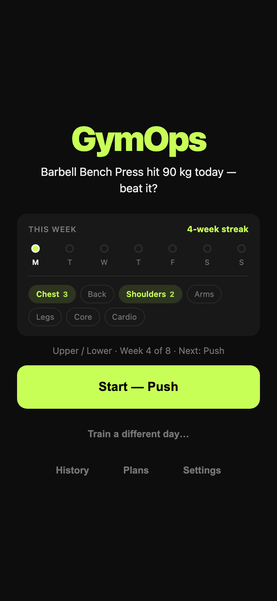
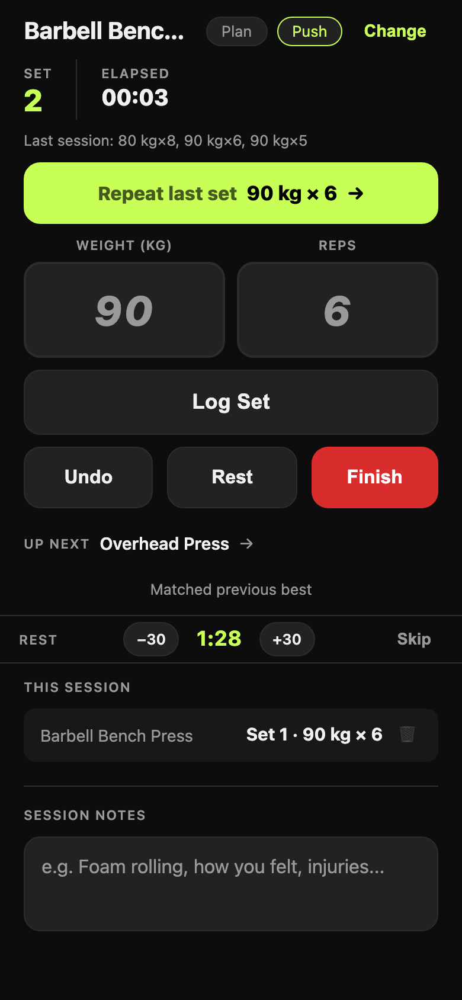
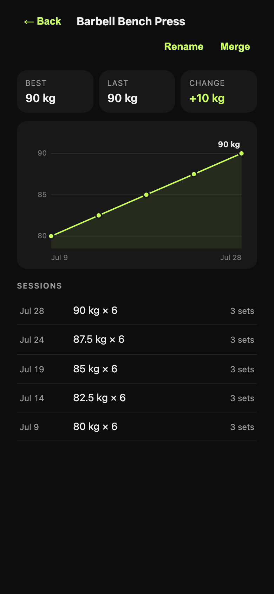

The fastest workout logger that never loses your history.
GymOps is a free training log for people who already know what they're doing in the gym. It logs sets in one tap, keeps your history on your own device, and doesn't try to sell you a programme.
No account. No install required. Opens straight into a working, empty app — nothing to sign up for.
The idea
Most gym apps are built to sell you a training plan, and the log is the thing you tolerate to get at the rest. GymOps assumes you already have a plan — written by you, your coach, or a book — and its whole job is to stay out of your way while you execute it.
That shapes every decision. You're mid-set, out of breath, holding a phone with one hand. So the most common action in the app — logging the same weight and reps you did last time — is a single tap, and the keyboard never has to appear.
Fewer screens. Fewer fields. One tap to log a set.
You're already tired; your app shouldn't be.
How a session goes
1 Start
Open the app and press Start. If you're running a multi-day split, the button already names the day you're due — Push, Pull, Legs, whatever you called it — and you can override it in one tap.
The home screen shows the week you've actually had: days trained, your streak, which muscle groups you've covered, and what your last session left on the table.

2 Log
The big lime button repeats what you did last time — weight, reps, done. Changing something? Type over it. Cardio logs duration and calories instead, and the app knows which exercises are which.
Rest timer starts itself after each set and can be nudged ±30 seconds. Your last session's numbers sit in the input boxes as ghost text, so you always know what you're chasing.

3 Finish
One button ends the session and tells you how it went against your own history: volume compared to last time, your best improvement, and how much of the day's plan you actually completed.
Then it's in your history for good — per-exercise charts, every session, every set. Beat an all-time best and the app makes a proper fuss about it.

Your data stays yours
GymOps has no accounts and no server holding your training. The database lives in your browser, on your phone. Nothing is uploaded unless you switch it on, and nothing is ever sold or measured for advertising.
The flip side of local-first is that losing the device has to be survivable, so the app takes that seriously:
- Back up everything to a file — one button in Settings writes your whole database out. Restoring it on a new phone brings back every session, plan and set.
- Export to CSV — a single session or any date range, in a format a spreadsheet understands.
- Optional Google Drive — if you turn it on, each finished session is also saved to your own Drive as a sheet. It's a copy, never the original.
- Damaged data is quarantined, never overwritten — if the app can't read your database it stops and offers you the file, instead of silently starting fresh.
- Usage counts stay put too — Settings shows a few numbers about how you use the app (workouts started and finished, sets logged). They're counted on your device and never sent anywhere; there is no server to send them to.
- Storage full is not data loss — the session keeps working in memory and the app tells you to back up immediately.
Because it's a browser app, the one thing that can still take your data is you: clearing site data for the domain deletes it, and iOS can evict the storage of web apps you haven't opened in weeks. That's exactly what the backup file is for — and why the app nags you before anything destructive.
Coming from Strong or Hevy?
Export a CSV from your old app, then open Settings → Import. Years of training come across with their original dates, so your charts and personal bests are correct from the first minute rather than starting from zero.
- It tells you before it writes. You see how many sessions and sets it found, the date range, and how many exercise names it matched.
- It won't guess. A name it can't match confidently is kept as a new exercise and flagged, rather than quietly merged into the wrong one. Strong's export doesn't record whether you lift in kg or lbs, so the app asks instead of assuming.
- It undoes. The whole import reverses in one tap, back to exactly the state you were in.
- Duplicates are fixable. If you end up with two names for one lift, merging them moves all the history onto the one you keep.
What's in it
Logging
One-tap repeat, ghost-text prompts, undo, per-set delete, auto-starting rest timer, session notes, 114 exercises with search and muscle-group filters.
Plans
Multi-day splits with targets. The app rotates to the right day, keeps the day's exercises in front of you, and measures what you actually completed.
Progress
Per-exercise charts, best/last/change, and in-session signals — whether this set beat last week, and whether the session beat the last one.
Offline
Installs to your home screen and works with no signal at all. Gym basements were the design target, not an edge case.
Accessible
Fully keyboard-operable, labelled for screen readers, AA contrast throughout, and pinch-zoom left switched on.
Open source
MIT licensed, no build step, no framework, no tracking scripts. What you read in the repo is what runs on your phone.
Putting it on your phone
GymOps is a web app, so there's no app store and no download. Open it, then add it to your home screen — after that it launches full-screen like any other app and works offline.
iPhone / iPad
Open gymops-two.vercel.app in Safari, tap the Share button, then Add to Home Screen.
Android / desktop Chrome
Open the app and use Install from the address bar or the browser menu. GymOps also offers it once you've finished your first session.
What it doesn't do
Worth knowing before you move your training into it:
- No cross-device sync. Your history lives on one device. Moving to a new phone is a backup file and a restore, not an automatic thing.
- No coaching. It won't write you a programme, pick your weights, or tell you to deload. It measures what you did against what you planned; the training decisions stay yours.
- No social feed, no leaderboards, no streak guilt. The numbers are for you.
- AI is a small optional extra. There's one post-session written summary, off by default, and it currently needs your own Anthropic API key — so treat it as a bonus rather than a reason to pick the app.
It's also honest to say GymOps is a personal tool that grew up in public: built by one lifter, used every week, and improved from real sessions rather than a roadmap meeting.
Log your reps. Own your data.
Free, no account, works offline. Takes about ten seconds to try.
Open GymOps